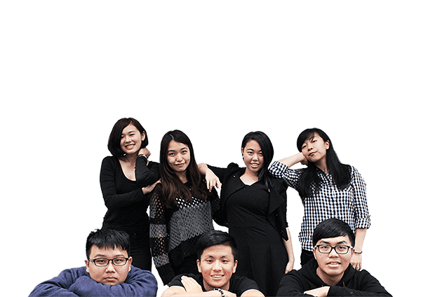
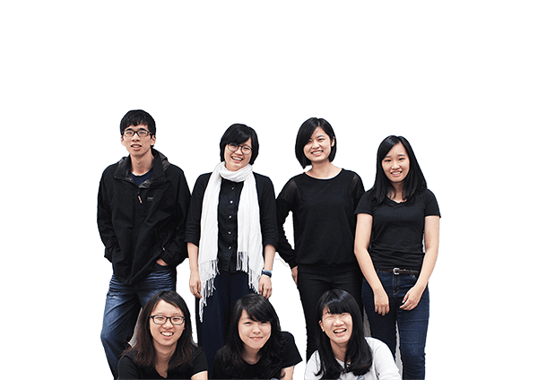
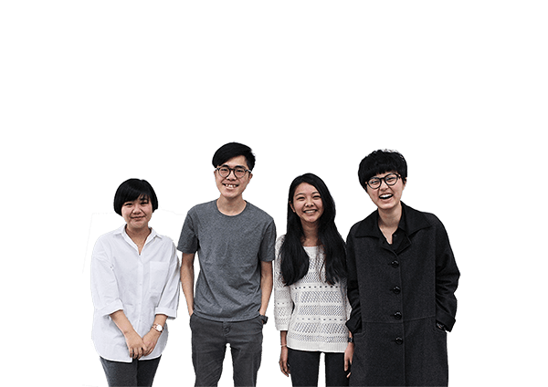
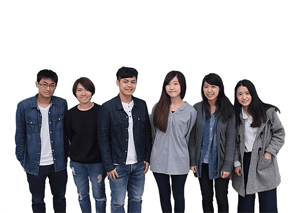

- ABOUT -
2016.5.24 - 2016.5.28 政大數位內容與科技學程第五屆畢業展
我從某處得知，在地球上，人與人之間只被六個人隔絕。六度的分隔，正是這個星球的人際距離。
在六度分隔理論下，人與人之間的透過六個層次的關係而串聯 ; 數位時代的日新月異強化了這份聯結，不到六分之一的牽連都足以成為改變世界的契機。
本次畢展以【 Six Degree 】為主題，從數位購物設計、互動電子書、數位宗教體驗、視角轉換遊戲設計、聲光展覽互動、到互動酒杯創新社交體驗等，六組策展團隊透過數位內容與科技互動應用，展現六分之一改變世界的創意設計。
- PROJECT -
SMART SHOP
/ 透過數位引擎開發出智慧購物的創意產品
現今社會因為網路及科技的發達，食衣住行愈發講究「智慧化」傳統的量販賣場的商業模式也能夠走向新消費體驗。SMART SHOP將開發一種新的體驗模式，透過改進線下消費流程，並隨時結合線上即時服務，以期能達到「O2O」的成功模式。這是一個串連消費者、業者、大數據的特殊購物體驗，又帶有一些些尋寶的趣味，到底要怎麼做到呢？
酒邦 ALCHO-CIETY
/ 光雕投影酒杯互動裝置
「酒精催化著數位世代的生命力。」「酒邦」團隊為了實驗年輕數位世代新型態社交模式而誕生。現階段多數酒吧僅注重場域氛圍營造，酒商公關行銷也停留在螢幕互動上，無法真正讓參與者自然地與場域進行互動。我們將IOT概念運用至互動酒杯開發，希望透過參與者的社交行為，觸發可變動式場域空間，帶給觀者視覺與聽覺的魔幻響宴之虞，打造出新世代「酒邦」的互動模式，一虧未來體驗行銷的可能性。

蝸牛島嶼
/ 繪本、電子書與互動裝置的融合
蝸牛島嶼以互動電子書及互動裝置的形式呈現，將目標觀眾設在成人。透過畫面、聲音、文字的氛圍安排，訴說一個少年成長的故事。期 待在繪畫、音效與互動的特色導引下進入故事，使不管哪一個年齡層的讀者閱讀後，都有不一樣體悟與樂趣。
忘川
/ 結合傳統信仰與數位遊戲的互動裝置
三世兩重因果輪迴，每次都有不同的外在形貌、不同的名字，也會產生形形色色不同的執念與遺憾。呼應展覽中對於民間傳說天馬行空的想像，「忘」也是期望放下，即使生命中有抹不去的遺憾，生、老、病、死、求不得、怨憎會、愛別離，過於執著也可能會阻止前進的腳步。設有三生石、奈何橋、孟婆亭三個互動裝置。

DIGI DALI
/ 數位音樂結合藝術體驗的互動裝置
「數位音樂 X 純藝術」的創新結合，重新詮釋超現實主義的夢境與幻覺。超現實主義的作品時常是充滿夢境般的奇幻場景，讓現實 以不合理的方式出現，而這種跳脫一般的思考框架，激發出我們想要提供一個新的聲光互動體驗的想法，以現代科技方式重現超現實的瘋狂以及不受限制。主軸內容為數位音樂與純藝術的結合，跨越 時間和空間的領域，融合視覺和音樂的聲光互動體驗。

穆克朗
/ 展場互動冒險遊戲，及擴增實境技術的應用
讓體驗者能藉由數位的方式，扮演小小人的角色，換一個角度在這個世界探索。這個故事是這樣說的，小小人與大人互相知道彼此的存在，兩個族群和樂融融的相處著。傳說中，小小人只要被大人觸碰到就會消失，為了避免被觸碰，小小人開始躲避大人，而隨著時間，大人也漸漸忘記小小人的存在...

 政大數位內容學程第五屆畢業展
政大數位內容學程第五屆畢業展